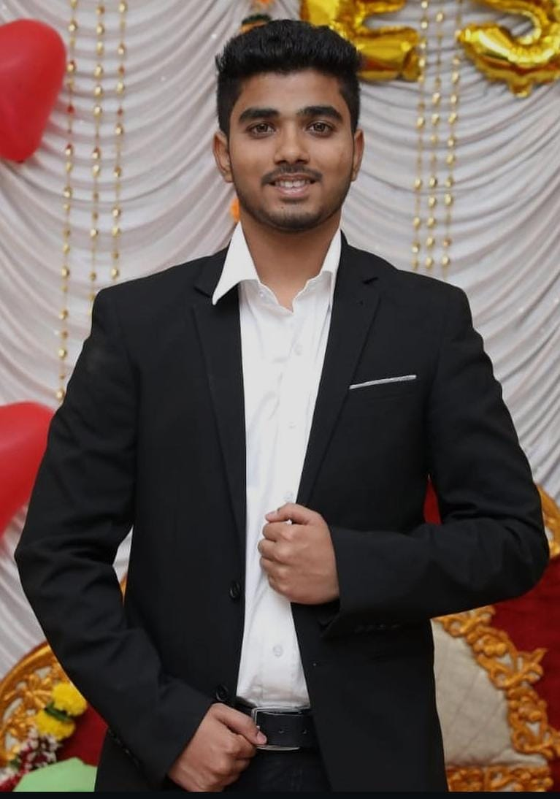

Welcome to My Personal Page!

I am Tejas Vaity a Software Developer and Research Assistant at the University of Michigan, pursuing a Master’s in Computer and Information Science. With 3.5 years of experience in Java, Spring Boot, Angular, and React, I specialize in developing scalable, high-performance web applications. In my current research role, I work on MLOps projects, including GitHub repository analysis tools and CI/CD automation with GitHub Actions and Jenkins, optimizing performance and reliability. My industry background includes building real-time trading platforms, optimizing backend systems with Redis, Kafka and microservices, and designing responsive frontends with modern frameworks. Passionate about solving complex problems, I bring a strong mix of research, backend engineering and frontend development expertise.
🎓 Visit My CIS 525 Course PageMy Favorite Movies
- The Matrix (1999) - A groundbreaking sci-fi thriller that questions reality
- Inception (2010) - Mind-bending exploration of dreams within dreams
- Interstellar (2014) - Epic space adventure with incredible visuals
Favorite Books
- The Lord of the Rings by J. R. R. Tolkien
- Half Girlfriend by Chetan Bhagat
- In Search of Lost Time by Marcel Proust
Favorite TV Shows
- The Big Bang Theory
- Friends
- Game of Thrones
Current Projects
I am currently working as Research Assistant in University of Michigan-Dearborn on CPS based systems for Docker Optimization.